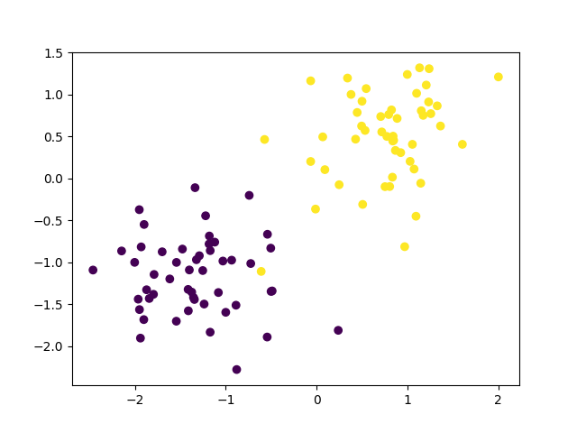
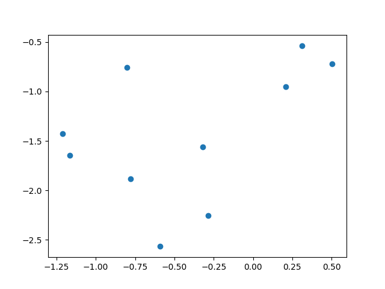
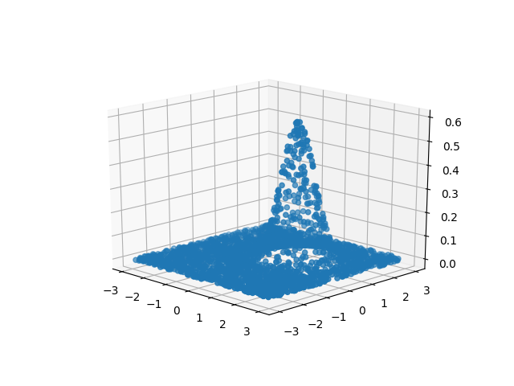

Maximum Likelihood Estimation of Gaussian Parameters#
Note
This text appearred in this post but because the math formatting disappeared from the original site, it is shamelessly copied here. Please note that in our notation \(N\) is \(m\) (number of examples / samples) and \(n\) is \(i\) (index of each example / sample).
The Big Picture#
Maximum Likelihood Estimation (MLE) is a tool we use in machine learning to acheive a very common goal. The goal is to create a statistical model, which is able to perform some task on yet unseen data.
The task might be classification, regression, or something else, so the nature of the task does not define MLE. The defining characteristic of MLE is that it uses only existing data to estimate parameters of the model. This is in contrast to approaches which exploit prior knowledge in addition to existing data.[1]
Today, we’re talking about MLE for Gaussians, so this is going to be a classification task. That is, we have data with labels, and we want to take some new data, and classify it using the labels from the old data. In the below images, we see data with labels (left), and new, unlabeled data (right). We want to be able to categorize each point from the new data as belonging to either the purple group or the yellow group.
 
Labeling dots as either purple or yellow sounds pretty boring, but the same idea applies to labeling emails as spam or ham or classifying audio clips as the vowel [a] or the vowel [o].
To make this post more tasty, let’s pretend we’re classifying skittles as purple or yellow.[2] We’re classifying these skittles based on two dimensions [x,y]. Let’s say the skittles have been rated by expert skittle-sommeliers on two traits: x = aromatic lift and y = elegance.
As you can see, purple skittles have bad ratings on both aromatic lift and elegance, whereas yellow skittles have been highly rated on both traits. Since these ratings are from expert skittle-sommeliers, they must be true.
To get our new, unlabeled data, we’ve given some new skittles to our expert sommeliers in a blind taste test. That is, the experts don’t know what they ate, and neither do we. The only information available for each skittle is its rating on aromatic lift and elegance.
Now, we want to take ratings for each mystery skittle and figure out if it was a purple skittle or yellow skittle. To accomplish this task, we build a statistical model, learning its shape from the old ratings (i.e. the labeled data).
For the above data we can build two models (i.e. 2-D Gaussians), a purple skittle model and a yellow skittle model, and then see which model is more similar to a new rating on a mystery skittle. Another approach would be to build a single model (eg. a neural net) that distinguishes purple skittles from yellow skittles, and then see how it categorizes each mystery skittle.[3] Here, we’re working with the former approach (build two models and see which one fits better).


We assume the data was in a sense generated by some process, and we’re trying to model what that process was. This is called the generative approach. The model we’re trying to learn is an approximation of the underlying process that created the data in the first place. So our data is just a sample from a process, and we want to learn the process.
At the end of the day, once we have our two models, we will use them to find which model was more likely to have generated the new data point. To take the leap from data \(\rightarrow\) model, we need to not only estimate possible parameters of the model (eg. for Gaussians we need \([\mu, \Sigma]\)), but we want the best model possible for our data. That’s where MLE comes into play.
MLE as Parameter Estimation#
MLE is one flavor of parameter estimation in machine learning, and in order to perform parameter estimation, we need:
some data \(\mathbf{X}\)
some hypothesized generating function of the data \(f(\mathbf{X},\theta)\)
a set of parameters from that function \(\theta\)
some evaluation of the goodness of our parameters (an objective function)
In MLE, the objective function (evaluation) we chose is the likelihood of the data given our model. This intuitively makes sense if you keep in mind that we don’t get to change our data, and we have to make some assumption about the form of our model, but we can adjust the parameterization of our model. So, we are limited to adjusting \(\theta\), and we might as well choose the best \(\theta\) for our data. To find the best \(\theta\) then, we need to find the \(\theta\) which maximizes our evaluation function (the likelihood). Therefore, in its general form the MLE is:
Likelihood for a Gaussian#
We assume the data we’re working with was generated by an underlying Gaussian process in the real world. As such, the likelihood function (\(\mathcal{L}\)) is the Gaussian itself.
Therefore, for MLE of a Gaussian model, we will need to find good estimates of both parameters: \(\mu\) and \(\Sigma\):
Solving these two above equations to find the best \(\mu\) and \(\Sigma\) is a job for our good old friends from calculus… partial derivatives!
Before we can get to the point where we can find our best \(\mu\) and \(\Sigma\), we need to do some algebra, and to make that algebra easier, instead of just using the likelihood function as our evaluation function, we’re going to use the log likelihood. This makes the math easier and it doesn’t run any risks of giving us worse results. That’s because the \(\log()\) function is monotonically increasing, and therefore
So now, we know that we want to get the best parameters \(\theta = [\mu, \Sigma]\) for a dataset \(\mathbf{X}\) evaluating on a normal, Gaussian distribution.
Since in reality our dataset \(\mathbf{X}\) is a set of labeled data \(\mathbf{X} = [\mathbf{x}_{1}, \mathbf{x}_{2}, \mathbf{x}_{3} \ldots \mathbf{x}_{n}]\), to evaluate our parameters on the entire dataset, we need to sum up the log likelihood for each data point.
Remember how that \(\theta\) is a general catch-all for any set of parameters? Let’s be more explicit with our Gaussian parameters \([\mu, \Sigma]\):
Here we’re going to make a big simplfying assumption (and in reality a pretty common one). We’re going to assume that our Gaussians have diagonal covariance matrices. So the full covariance matrix \(\mathbf{\Sigma}\) gets replaced by a diagonal variance vector \(\sigma^{2}\):
Now, with this simplification, we can take a look at our fully specified log likelihood function that we’ll be working with from here on out.
Now we have the likelihood as we want it (Gaussian, logged, diagonal covariance matrix). Let’s not forget what our main goal is! We want to find the best parameters for our model given our data, so we’re going to find the \(\underset{\mu}{\operatorname{argmax}}\) and \(\underset{\sigma^{2}}{\operatorname{argmax}}\). Before we can get to that point, we need to do some simplifications to the log likelihood to make it easier to work with (that is, since we will soon be doing some partial derivatives, the log likelihood in its current form it will lead to some messy math). In the following, \(\mathcal{LL}\) means log likelihood.
The next first steps take advantage of our choice to use the log likelihood instead of the plain likelihood. Our first step will be to use the log product rule:
Now we will use the log quotient rule:
Now, we’ll use the log power rule:
We’re now going to be explicit that the \(\log()\) function we used was base \(e\). This allows us to simplify \(\log_{e}(e) = 1\) as well as \(\log(1) = 0\) (regardless of base).
We can apply the power rule one more time (remember that \(\sqrt{x} = x^{1/2}\)).
Now for some basic algebra simplification:
Now we have our log likelihood function (\(\mathcal{LL}\)) in a nice, easy to work with form. Now we need to take the (\(\mathcal{LL}\)) and estimate it’s maximum for our parameters. We’ve got the \(\mathcal{LL}\) ready for \(\underset{\theta}{\operatorname{argmax}}(\mathcal{LL})\), now we need to do the \(\underset{\theta}{\operatorname{argmax}}\) part. This is where we get a little help from our friends, partial derivatives. We need partial derivatives because our \(\theta\) is really two variables \([\mu, \sigma^{2}]\), and we need the best value for each.
So, now we’re going to solve the problem for each variable one-by-one:
To get the \({\operatorname{argmax}}\) for each parameter we have to do two things. First, we must:
derive the partial derivative of the function with respect to that parameter, and then
set that partial derivative to zero, and solve for our parameter
By doing step (1), we get an equation for the change of the function, and we know that if the function isn’t changing at a certain point, that point is a maximum or a minimum (or a saddle point).
In our case, our log-likelihood function is concave, so we know that at \(\frac{\partial \mathcal{LL}}{\partial \mu}=0\) we get a maximum.
MLE of \(\mu\)#
First we’ll work to solve for the mean of our Gaussian, \(\mu\). Remember we’ve got our likelihood function in a simple form:
and now we want to get the best \(\mu\) for that function:
So, to get to the point where we can set the partial derivative to zero and solve, we need to first find the partial derivative with respect to \(\mu\):
Now let’s start simplifying! First we can right off the bat get rid of the first term since it doesn’t contain \(\mu\), and therefore is practically speaking a constant:
Next, remember that the summation expression is just a convenient way to write a longer expression:
Also, We know from the summation rule that :
Therefore, when we take the derivative of a sum, we can reformulate it as a sum of derivatives:
Now, getting back to the problem at hand, we can move the derivative operator inside the summation term:
Now we can use the product rule:
Now some terms will nicely drop out:
At this point we can use the chain rule, \(\frac{\partial}{\partial x}\big(f(g(x))\big) = \frac{\partial}{\partial x}f(g(x)) \cdot \frac{\partial}{\partial x}g(x)\), with \(g(x) = (x - \mu)\) and \(f(x) = x^{2}\).
Yay! We’ve done as much simplifying as we can at this point, and gotten rid of all of our \(\frac{\partial \mathcal{LL}}{\partial \mu}\) terms!
Now what we have is the simplest form of the partial derivative of our likelihood function with respect to \(\mu\). Now we want to use this equation to find the best \(\mu\), so we set it equal to zero, and solve for \(\mu\).
Huzzah! We’ve reached the promised land! We now have a formula we can use to estimate one model parameter (\(\mu\)) from our data (\(\mathbf{X}\)). Let’s take a second to think about what this formula means. Remember that we started with a bunch of data points:
We want to take that data and make some models which we think represent that data well. In our case we are learning two Gaussian models, one for the yellow skittle data and one for the purple skittle data:
To make our Gaussians fit the data as well as we can, we can do two things: (1) move the center of the curve or (2) adjust the width of the peak. Right now, with \(\mu\) we’re only talking about the placement of the center of the curve, we’re not talking at all about its width.
Where is the best place to put a bell curve to cover all our data? Well, how about the center of our data! Dead-center, bull’s eye, whatever you call it, we’re putting our Gaussian right in the middle of it all (the mean). We’re taking all our points, summing them up, and dividing by the number of data points. This is the average, and it is (for the likelihood function) the best place to put the mean of our model.
Getting back to the skittles, the center of the curve \([\mu_{x},\mu_{y}]\) for our yellow skittle model comes directly from our sommeliers’ ratings (i.e. \([\mu_{x}]\) = average rating for aromatic lift and \([\mu_{y}]\) = average rating for elegance). Our purple skittle model was centered in the exact same way.
Sure enough, if you take a look at the data, you’ll see that the yellow skittle data is grouped around the point [-1,-1] and that the purple skittle data points are all clustered around [1,1]. Now take a look at the models we’ve made. You’ll see that the center of the peak for the purple skittle model is somewhere near [-1,-1] and that the peak of the yellow skittle model is around [1,1].
MLE of \(\sigma^{2}\)#
Now let’s tackle the second parameter of our Gaussian model, the variance \(\sigma^{2}\)!
Let’s start with the product rule for the lefthand term:
Now we can use the chain rule for our term with the \(\log\) operator, \(\frac{\partial}{\partial x}\big(f(g(x))\big) = \frac{\partial}{\partial x}f(g(x)) \cdot \frac{\partial}{\partial x}g(x)\), with \(g(x) = 2 \pi x\) and \(f(x) = log(x)\).
Now, using the same logic as above with \(\mu\), we can move the derivative operator inside the summation operator:
And again, the product rule:
Now let’s be careful with our exponents, since we’re taking the derivative of the function with respect to a squared variable \(\sigma^2\):
Now it’s obvious that we need the product rule:
Now, we’re going to use the chain rule again, by first treating \(\sigma^{-2} = (\sigma^{2})^{-1}\), then we can see \(f(g(x))\) with \(f(x) = x^{-1}\) and then \(g(x) = x^2\):
Huzzah! We’ve gotten our partial derivative for \(\mathcal{LL}\) with respect to \(\sigma^2\)as simplified as we can. Now let’s find the best \(\sigma^2\)for our data by setting the equation equal to zero and solving for \(\sigma^2\).
And there we have it! All that work has boiled down to a simple equation do get the best \(\sigma^2\) for our Gaussian given our data. Just like with \(\mu\) if we take a second to look at the equation, we find it has a very intuitive interpretation.
We’re iterating over each data point (\(x_{n}\)) and finding its particular deviation from the mean of all the data points \(\mu\). We sum up all the deviations, and then take the average!
Just as when we were finding the best \(\mu\) for our Gaussian by setting it to the average (\(\mu\)) of the data, we’re now setting our standard deviation to be, well, the standard deviation of the data! Think of standard as being a synonym to average, and it becomes pretty clear.
Thinking back to the skittles, what we’ve done here is taken each skittle, one-by-one, and figured out how far it deviates from the mean on a certain rating. For example, we know that on average, our expert sommeliers rated purple skittles to have a [-1] score for elegance. However, not every purple skittle got a score of [-1]. Each skittle deviated from that average, and if we add up how much each skittle deviated (after squaring), we with the average deviation. Take a look again at our skittle data:
Specifically, look at the purple skittles. You see the purple skittle that got a rating of about [0,-2]? That skittle had pretty horrible elegance and better-than-average aromatic lift. This skittle obviously deviated from the normal rating. We take this skittle along with every other, calculate that deviation, and get our \(\sigma^2\)for our model.
Conclusion#
We did a lot of algebra, some calculus, and used some tricks with \(\log_{e}\) to get to this point.
Along the way it’s easy to get lost in the weeds, but if we keep in mind that all these equations have some interpretation, we can catch the big picture. In our case, the big picture is very clear:
When using Maximum Likelihood Estimation to estimate parameters of a Gaussian, set the mean of the Gaussian to be the mean of the data, and set the standard deviation of the Gaussian to be the standard deviation of the data.
I hope this was helpful or interesting! If you find errors or have comments, let me know!